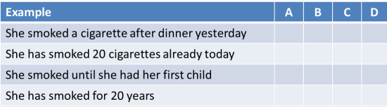

The present perfect: the past embedded in the present
The distinction in English between the simple and perfect forms of
all tenses is the key to understanding how English conceptualises time.
If you haven't followed the introductory guide to English tenses yet, please consider doing so
now (new tab).
Languages differ |
Many languages have verbs forms selected to represent the speaker's
view of the time an action took place or a state existed – that is what tenses do. However, they differ
in terms of what they see as the important distinctions.
Some languages, such as
Mandarin, have no changes to verbs to signify time at all, relying on
adverbials, particles and the context to signal time concepts. It
is perfectly possible to be understood (at least on a basic level) and
use no tense forms at all. So:
I go tomorrow
I come yesterday
I always do this
I arrive recently
I finish work at 6 last week
are all perfectly comprehensible even if they need a little
interpretation from the listener.
The perfect aspect is signalled in English through the use of a
form of the verb have.
When the forms are used, it means that the user of English is
relating one time to another so, for example:
- Mary has made lots of money
means that she is rich now and that relates a past activity, making money, to a present state, being wealthy. - Mary had made a lot of money
means that she was wealthy then because of a previous activity, making money.
Sometimes, languages may have forms which look
superficially similar to the perfect aspect in English but which do
not signal a relational sense.
German, for example, can form a
sentence like:
Ich habe es gemacht
roughly translatable as
I have done it
but this does not necessarily signify present effect and could be translated as:
I did it.
Many languages do not distinguish a perfect aspect at all and
rely on adverbials and other time markers to make the connections
between times even when they bother with the concept at all.
Other languages content themselves with
the use of the past simple form to cover both the past simple and
the present perfect in English. Speakers of these languages
may not even see the need to distinguish.
Bulgarian, Czech, Dutch, Persian languages, French, Hungarian, Italian, Khmer,
Lithuanian, Luxembourgish, Mongolian, Portuguese, Slovak, Somali,
Tajik, Telegu, Turkish, Ukrainian, Yiddish and Zulu for example can
all encode both:
I have done it
and
I did it
in precisely the same way, making no aspectual difference at all.
Italian distinguishes between distant
past time and recent past time and all languages have ways of dividing
and classifying time which may or may not overlap or run parallel with
how English does it.
This is one reason why the present perfect is problematic for many
learners whose first languages have a similar form carrying a
different kind of message.
Speakers of languages which do not have a parallel forms may also be
confused by the use of primary auxiliary verbs, such as have,
be, do etc. to make tense forms which encode specific
relationships.
 |
Forming the tense |
The simple form of the present perfect is not too difficult to grasp or to teach. It works like this:
| Type | Form | Examples | |||
| Affirmative | subject | + auxiliary | + main verb (past participle) | [+ object if needed] | She has broken the glass Mary has asked him |
| noun / pronoun | have / has | broken, smoked, came etc. | noun / pronoun | ||
| Negative | subject | + negative auxiliary | + main verb (past participle) | [+ object if needed] | I haven't been to London The weather hasn't been warm |
| noun / pronoun | have not / has not | broken, smoked, came etc. | noun / pronoun | ||
| Interrogatives | auxiliary | + subject | + main verb (past participle) | [+ object if needed] | Have you seen my wallet? Has the pub opened? |
| have / has | noun / pronoun | broken, smoked, came etc. | noun / pronoun | ||
| negative auxiliary | subject | + main verb (past participle) | [+ object if needed] | Haven't you finished it? Hasn't the weather been lovely? |
|
| have not / has not | noun / pronoun | broken, smoked, came etc. | noun / pronoun | ||
The continuous or progressive form of the present perfect is slightly more complex. It works like this:
| Type | Form | Examples | ||||
| Affirmative | subject | + auxiliary | + been | + main verb (-ing form) | [+ object if needed] | She has been mending the glass Mary has been asking him |
| noun / pronoun | have / has | breaking, smoking, coming etc. | noun / pronoun | |||
| Negative | subject | + negative auxiliary | + main verb (-ing form) | [+ object if needed] | I haven't been
travelling to London It hasn't been raining |
|
| noun / pronoun | have not / has not | breaking, smoking, coming etc. | noun / pronoun | |||
| Interrogatives | auxiliary | + subject | + main verb (-ing form) | [+ object if needed] | Have you been running? Has the pipe been leaking? |
|
| have / has | noun / pronoun | breaking, smoking, coming etc. | noun / pronoun | |||
| negative auxiliary | subject | + main verb (-ing form) | [+ object if needed] | Haven't you been
working hard? Hasn't the rain been falling heavily? |
||
| have not / has not | noun / pronoun | breaking, smoking, coming etc. | noun / pronoun | |||
It is not the forms of the tense that are difficult to learn. It is the concepts that are harder to grasp.
 |
Conceptualising time |
The present perfect is a relational tense. We
use it to consider one state, event or action in relation to another.
Fundamentally, the tense is a present tense, not a past
tense, because it refers to the present in relation to the past.
Another way of putting that is that it refers to the past within
the present.
This is what is meant:
| Example | Concept and meaning |
| I have spent all my money | Spending money is clearly in the past but the reference is to having no money now. |
| He hasn't finished yet | The fact is important to now because he must continue to work. |
| He has been running and is all sweaty | The running was a progressive action in the past but mentioning it explains the present. |
| I haven't been paying attention, I'm afraid | My lack of attention is a continuous state in the past but it explains why I do not understand now. |
| Have you seen the paper? | I am referring to up to now because I want the paper now. |
One way to understand the concept the present perfect in
English indicates is to contrast it with the past simple.
The past simple is an absolute tense, not a relative one, and refers to
a finished event or action which may or may not have any relation to the
present. For example:
| Example | Concept and meaning |
| I spent all my money | This just refers to something finished. It does not necessarily imply anything about the present. |
| He finished at six | Compare this to the use above with yet. The time expression at six clearly fixes the event in time but yet is open ended. This does not mean that the time expression controls tense use. It is the other way around: the tense meaning permits some time references and not others. |
| He ran for the bus. | The running was a progressive action in the past but says nothing about the present. |
| I didn't pay attention, I'm afraid | There's no reason why this matters at all now. It explains nothing. |
| Did you see the paper? | I am interested in what you saw, not where the paper is now. |
The key point to grasp in all of this (and the one your learners
need to get hold of) is that the past action has changed the
present in some way. There are many times when it
actually signals that a present event would not have happened or a
present state would not exist if a past event or state had not.
For example:
The money has arrived so we can buy the car
signals the fact that but for the arrival of the money, the action
of buying the car would not have occurred at all.
Many course books and websites will focus on a rather nebulous
concept of present relevance but it's hard to
define that because relevance is a gradable concept.
If we get away from that term and focus on how the past has
changed the present, we are on safer ground.
 |
 |
Now, as a test, can you complete this table? Click on the table when you have filled in all the blank cells in your head. |
Compare these examples and see if you can figure out whether:
- the action took place at a particular point in time
- the action continued over a period of time
- the action continued up to the present
- the action has some obvious present effect
Fill in the grid (you can tick one or more boxes). You can do this in your head or on paper. Click on the table when you have an answer.

Notes:
- (Past simple) You may have decided that she smoked a cigarette is an action that takes a period of time. That's OK but the action is seen as taking place at a particular moment in time. It tells us nothing at all about the present.
- (Present perfect) Clearly, the second sentence tell us two things: the action has extended over a period of time and it has extended up to now. It is also possible but not certain that she will smoke more in the future. You may have ticked D for this sentence, too. That's OK, providing you have seen some present effect.
- (Past Simple) The third example tells us two things. It is completed (and we know when it stopped) and it took place over an extended period of time. It tells us nothing at all about the present.
- (Present perfect) The last example gives us the same kind of information that the second sentence conveys but we know that her action has made a difference to the situation now (perhaps she has determined to give up, perhaps this is her doctor's description of her life style etc.).
At the outset, we said that the present perfect tense embeds past events in the present. A way of conceptualising this for learners is like this:
| John took the train to work | |
| John walked to his office | |
| John is at his desk | |
| John has arrived |
A quick way of presenting this concept to learners which you
can return to frequently in a lesson is:
You could even leave it running in the background.
 |
Comparing the past simple and the present perfect |
Compare these and note the difference in meaning:
- Jo lived almost all her life in India
- Jo has lived almost all her life in India
When you have noticed two differences in meaning, click here.
- The first difference is that in sentence 1 we know that Jo is no longer living in India but in sentence 2 we would probably assume that she still does (or that her having spent time in India has some importance for now, for example, she can speak an Indian language, can find her way around an Indian menu, knows about Indian cultures and so on).
- The second difference is that in sentence 1 Jo is quite possibly a historical character or, sadly, no longer with us but in sentence 2, Jo is certainly alive and may continue living in India into the future.
This distinction between the simple past and the perfect form lies at the heart of the way English conceptualises past time.
A way to understand the use of the present perfect simple and the
progressive form is to think in terms of
telicity: whether an end point is in consideration,
on which more below. For example:
I lived in London for ten years
clearly implies that the process is finished, and the sense is
telic, whereas:
I have lived in London for ten years
is atelic because the process is unfinished.
Both tense forms can signal both types of telicity so we can find:
I read the book
for two hours
which implies that I did not finish it, although I am no longer
reading it as I speak, whereas:
I read the book
in two hours
implies that the reading is finished.
Equally:
I have been to New York three times
implies that the visits are finished and the use is telic although
there is a strong sense of this changing the present,
whereas selecting the progressing form of the present perfect as in:
I have been visiting New York regularly for
years
implies that the events are not finished (atelic) and form part of a
series.
There is much more on the distinction between the simple and
progressive aspects of the present perfect below.
 |
The present perfect progressive |
The sense of the past within the present is not altered when we
use the progressive forms but an extra layer of meaning is added.
We use the progressive aspect with the present perfect to do a
number of things, many of which are overlapping concepts.
Here, we will try to tease out the underlying ideas.
 |
Activity vs. Achievement |
We can use both tenses to refer to a past within the present so
we can say either:
He has climbed the mountain
or
He has been climbing the mountain
but in the first we are emphasising his achievement (i.e., the
outcome of his efforts) and in the second, the activity itself
(i.e., the efforts themselves).
In the first example, the change to the present concerns his current
position (on top).
In the second example, the change concerns his current state
(exhaustion, perhaps).
Another example may make things clearer.
- achievement or outcome
- If we say, e.g.:
I have finished the report
the obvious sense is that it is now available for you to read, pass on to the boss, publish or whatever.
We are laying stress on the achievement which has altered the present.
If we say, too:
I have taken my holidays in France for many years
we are suggesting that it is the outcome of the activity which has changed the present and it implies that my knowledge of France is available for use. - activity or effort
- If, in contrast, we say:
I have been finishing the report
we emphasise my activity, not the achievement and it is the activity which has altered the present and that explains why I am late home, have been out of touch or whatever. In this case, the report is not the central issue, it is the activity which is important.
If we say, too:
I have been taking a holiday in France
we are emphasising that the activity and explaining why, say, I have not been answering my emails or been available.
Similar examples can be used when the activity is what interests
us, not any kind of achievement and it is the activity which serves
to explain the present. Here are three:
I have been running (and I'm hot and tired)
She has been drinking (and she's not making sense)
What have you been doing? (to get so dirty, tired, wet etc.)
 |
Semantic considerations |
- verb meaning and achievement
- Some verbs contain within their meaning the sense of
an achievement or an outcome.
If, for example, we say:
She has succeeded
the use of the verb succeed usually prohibits the progressive form so we do not encounter:
*She has been succeeding
because the verb itself refers to achievement not activity.
Equally, we do not find:
*They have been accomplishing it
*She has been realising it
and so on for similar reasons.
With verbs which imply any kind of achievement, the use of the progressive form is simply unnecessary (and usually wrong).
Other verbs which work this way include:
annihilate, attain, complete, conclude, defeat, demolish, destroy, do (in the sense of finish), finish, pull off, reach, ruin, stop, triumph, win and more. - verb meaning and stative or dynamic use
- The shorthand for this distinction is to think of stative
and dynamic verbs and that is how it is often presented to
learners. A better way to consider it is to look at the
meaning of a verb and ask whether its use in this
meaning is stative or dynamic.
For example:
I have often thought that the garden needs some work
is the use of the verb think to mean believe but:
I have been thinking that the garden needs some work
is the use of the verb to mean deliberate or cogitate.
The rule is that when a verb is used statively, the progressive form is unacceptable.
Other pairings showing this distinction include:
John has appeared a bit depressed recently
in which appear means seem and
John has been appearing in The Importance of Being Earnest
in which the verb means act or perform.
She has had the house for years
in which the verb have means possess, and
She has been having an argument
in which the verb means conduct or take part in.
It follows logically that verbs which are very firmly tied to a state rather than an action, such as own, seem, look like, possess, own, believe, suppose etc. will not appear in the progressive form.
Other verbs, which are polysemous and can be used in both forms with a change in meaning include have, consider, think, appear, imagine, judge, look, occur etc. and may appear in either simple or progressive structures depending on the meaning intended.
(Rarely, even the verb be can fall into this polysemous category. Normally, it cannot be used dynamically but in the sense of deliberate assumption of a characteristic, it can. We allow, therefore:
He has been being difficult for some time.) - adverbials and time / event markers
- The distinction is clear here, too.
We can say, for example:
I have flown across the Atlantic four times
They have run six marathons
She has often spoken about her schooldays
and so on because we are focused on the achievement or outcome of the actions.
Using the same forms with the progressive makes no sense because the focus of the progressive is on the efforts or activities, not the outcomes so we do not find:
*I have been flying across the Atlantic four times
*They have been running six marathons
*She has often been speaking about her schooldays
 |
Telicity |
The term telicity is not something with which you should trouble
learners but the concept is important to understand.
The question to ask is whether an event or action is seen as
finished (that is to say, perfective [not perfect]) or whether there
is no end point in sight.
The progressive form of the tense is used most frequently for events
and actions which are seen as atelic, having no explicit finishing
point and the simple aspect is used to refer to actions or events
that are telic and, although finished, are still set in the present.
Both forms refer to the past within the present.
For example:
I have read the book
clearly implies that the action of reading is now finished but
that the reading of the book is set in the present because it makes
a change to our conversation in some way, for example, removing any
obligation to explain what it is about.
I have been reading the book
on the other hand, means that the book is not finished.
It is still a past within the present in terms alterations to the
present, of
course.
The guide to talking about the present, which considers the present perfect (because it is a present tense) delves a bit deeper into the phenomenon of telicity.
 |
Other aspectsPunctual and durative verbs |
The present perfect tenses, both simple and progressive are
described as having a perfect aspect and by that it is meant that
the tenses refer to the past within the present.
This is true but the progressive form is also used to describe two
other aspects which are not obvious by looking at the forms.
- Iterative
- This aspect refers to events or actions which are repeated,
and that is what iteration means. For example:
John has telephoned me
implies a single past event set in the present to show it has changed the present in some way (for example, that I have been told some news or whatever).
However:
John has been telephoning me
implies a series of events of the same kind. The reason is that a verb like telephone is punctual and suggests a short, one-off action. The sense is still of a past within the present but in this case we are concerned to show that the event has been repeated so the form of choice is present perfect progressive (although it might be better referred to as present perfect iterative). - Durative
- This aspect refers to events or actions which take a
substantial time. We are emphasising, then, the duration
of the event or action. For example:
John has lived in London for many years
simply states a fact and sets the event in a present context so, for example, John would be a good person to ask about the city.
However:
John has been living in London for many years
means roughly the same but the speaker's emphasis is on the duration of the event, not the event itself. Present effect is maintained.
A key distinction here is semantic not grammatical. Some
verbs, by their nature, cannot refer to long-lasting events.
They are punctual verbs and include, for example:
arrive,
bang, begin, break, bump, burst, chop, crash, detonate, dip, dive, drop, explode,
flash, glow, hit, jolt, kick, light, meet, name, open, pop, quip, rap, shatter, shoot, slam, smash, spit, spurt, steal,
stop, tap, thump, upset, volunteer, wake
etc.
Other verbs, the majority, may be durative and the
list includes:
cry, design, enjoy, frighten, glow, hurry, inspect, justify,
keep, love, moan, nurture, oppose, play, quieten, read, run, speak, talk,
undo, vary, wish, write etc.
Most verbs are polysemous and have closely connected but distinct
meanings so, for example:
She has frightened the children
implies a single event which was not long lasting but
She has been frightening the children
implies a repeated, not necessarily long-lasting event.
Verbs which can only be punctual in nature, such as flash, pop,
thump etc. are, when they are used in the progressive form,
always iterative, not durative.
Summary of progressive vs. simple tense uses
It makes sense, of course, to handle the distinctions piecemeal with learners rather than expecting them to absorb all this in a single sitting.
The key ideaThe use of the present perfect in English depends on how the event or state is viewed with respect to the present. |
and that, of course, explains why it's called the present
perfect.
This little animation is taken from the lesson for elementary
learners which tries to keep things simple but show how the present
perfect is used to refer to past events which change the present.
 |
Time markers |
It is because of the way that we think about past time that each of these tenses is associated with different time markers (not, incidentally, the other way around). Here's what we mean:
| With the simple past | With the present perfect | With both |
| yesterday last week last year on Tuesday in 1956 two months ago |
since 2010 up to now recently lately already yet |
today this week for 5 years |
Learners who don't have a good grasp of the concepts here will
often produce incorrect sentences such as:
I have lived here two years ago
I lived here since 2014
I did it already*
I worked up to now
and so on. This is not usually because they
don't understand the time markers, it is usually because they
haven't got the concepts of the times right.
*
Standard American (AmE) uses this kind of construction
frequently, as in, e.g.,
Did
you just arrive?
etc.
 |
Getting it the right way round |
A number of coursebooks have an annoying habit of presenting
learners with long lists (as in the table above) of time phrases to
use with past tenses and others to use with the present perfect.
From the list, learners are expected to think something like
"If I
am using last week, I must use the past simple"
or
"If I am
using since, I must use the present perfect".
That is the wrong way round.
The choice of the appropriate time marker depends on the speaker's
perception of time which is represented by the tense structure.
It is not the time marker which determines the tense; it is the
speaker's understanding which determines the tense and the tense
which determines the appropriate time marker. To be clear, it
does not work like this:

it works like this:

If that is not understood, it is virtually impossible to teach the form, the meaning or the use.
 |
The present perfect to talk about the present |
You will readily see that sentences such as
I have been to America
They have seen the aurora borealis
We have never seen anything like it
She has never smiled at me
refer to a time between the speakers' earliest memories and now.
The meanings are indefinite concerning the
time and focuses on the event alone. It is for this reason that
the tense is often used to comment on the present or to introduce the
topic of a conversation. Here are some typical examples which do
not relate to recentness but use the tense in this aspect of discussing
experience or raising a topic:
Did you know that Mary has left her job and
gone travelling?
introducing a topic for discussion it may be a recent
event but that's not the point
You've been to Paris, haven't you?
possibly a forerunner to some closer questioning about Paris
I've discovered something about this
program
requiring the hearer to say something like Oh, what's that? Do
tell. etc.
Have you tried the new restaurant in the
square?
a forerunner to asking what it's like or telling the hearer
what it's like if the answer is 'no'.
It's pretty easy to make up examples of this very common use of the tense but the trick is to set it in context and give people a reason to introduce a topic and that's usually because:
- they want to get some information (now)
- they want to give some information (now) or
- they want to start a discussion (now)
Overwhelming learners |
If you have followed up to now, you will know:
- the present perfect simple in English embeds the past in the present as an aid to understanding the present
- the present perfect progressive refers to an atelic, iterative or long-lasting past event embedded in the present which also helps us to understand the present
and those two concepts are really all that is needed to understand the use of the tenses.
However, quite well meaning and experienced if not well informed
practitioners persist in overwhelming learners by inventing ever
more complex and refined uses of the tenses in an effort, forlorn,
naturally, to help learners use and understand the forms.
Some coursebook writers fall headlong into this trap, too.
You will find, for example out here on the web something like the
following seven uses for the present perfect simple including, but
not limited to:
- past finished action
The example here is usually along the lines of:
I have broken my pencil
which we are asked to believe is a past tense.
It is not, of course, because, although the action referred to is clearly a past event, we do not know when it happened but we do know why it was reported: it says something important about the present so the past is embedded in it. It is vanishingly rare to hear or read something like that in isolation because it would inevitably be followed by something like:
... so can I borrow yours, please?
If we do want to focus on the present perfect for perfective actions or events, then we have to follow it with a comment about how the past event changes the present. Otherwise, practice is misleading. - recent completed action
How this might differ from the previous example is hard to fathom because the terms finished and completed appear to be synonymous in these uses. A typical model-sentence example is something like:
She has just arrived
and, again, it is clear that this will inevitably be followed by an implied or stated fact about the present such as
... so we can start the meeting.
The other problem with this way of suggesting the present perfect is used lies in the meaning of the word recent. The word is a gradable adjective so cannot be precisely pinned down. If we have, for example:
Mary has lived in India
it is unclear whether the event referred to is recent or happened a long time ago. It actually doesn't matter, of course, because the sentence is about Mary, now and not about the past at all. - unfinished actions
The example usually trotted out here will be something like:
He has lived in London for 10 years
and learners will be asked to believe that this is somehow a different use from the previous two cases. It is not, of course, because the tense form does not tell us that the state is unfinished at all. It could be followed by:
... but left this morning.
That aside, the form is still a past embedded in the present because its usual implication will be something like:
.... so he knows all the best places to eat around here
which is, of course, a comment about the present which is affected by what has gone before. - multiple actions
The usual example is along the lines of:
I have visited The British Museum often
and learners are now faced with trying to understand what distinguishes this from the last example.
The answer, of course, is nothing. What is happening here is a semantic issue because the verb live implies a long-lasting state unlikely to be seen as iterated and the verb visit implies a short action of some kind which can be repeated.
All this implies is exactly the same as the last example and might be:
... so I can show you around, if you like
which is an offer applicable to the present. - changes over time
This is a wholly made-up category which might be represented with a model sentence such as:
She has taken to eating later and later these days
and that, of course, assumes that it will be followed by:
... and now she eats after 9 o'clock every evening
which is, to labour the point, a comment about her present habits with the past embedded within them as a way of explaining why I am bothering to mention it at all.
The key here is how it is described: changes over time means that the present is different from the past and that is exactly what embedding the past in the present suggests.
There is no need at all to invent another category for this meaning. - accomplishments
This is another made-up category which has no discernible classroom utility and only serves to confuse learners unnecessarily. An example often given is:
She has won!
which is intended to be understood as a reference to the past.
It is not, naturally, because it implies:
... so she is now into the final
or whatever, i.e., a comment about the importance of a present state of affairs.
We saw above that this is a semantic issue to do with the meaning of the verb, not a grammatical issue at all. - life experiences
This is a very commonly used category often represented by something like:
I have never eaten Thai food
or
I have visited the USA quite often on business
and so on.
This differs not at all from any of the foregoing examples because it is simply a way of explaining the present state of affairs as in, for example:
... but I would like to try it
... so I don't know if you would like it
... so I can give you some advice about the USA
... so we can exchange impressions concerning the country
etc.
There is nothing mysterious about this at all.
The trick, as it so often is, is to set the practice with a co-text. If the focus is left on using the present perfect for life experiences without going on to explain how the experience has changed you in the present, then it is wasted because, for example:
I went to school when I was five
is a way of talking only about an experience without implying that it changed the present in any way and does not require the use of a perfect aspect form.
It is unfair, unnecessary and counterproductive to teach the
tense this way because learners are being asked to acquire seven
concepts in which the tense is usable rather than developing a feel
for the language and knowing that past events are embedded in
present forms for a good reason in English.
That is not needed.
 |
Teaching the present perfect simple |
Here are some suggested contexts in which to teach and practise the form.
| Learners make lists of things they have never done, have
done, have done only once/twice etc. They then mingle with other students to see if their lists overlap or not, asking and answering questions in the form. The key here is to make sure that the learners make a comment to follow the activity using so ... or then ... . This makes mini-dialogues which show the use such as: I have been on holiday Have you? Yes, so I'm feeling pretty relaxed or I have never eaten Italian food Oh, haven't you? Then today we should go to the restaurant on the corner so you can try some |
| Learners think about / write about / talk about what they
have done using the time markers usually associated with the
tense (see above). They then explain what they have written or thought about saying why and how it has changed the present. |
| Learners invent gossipy stories about each other / teachers
etc. and then pass them on to a colleague who in turn
embellishes the snippet of scandal and passes it on again.
E.g., Did you know that John has moved in with Mary? Yes, and she has decided he can't stay much longer. |
| Learners decide on pieces of
information they need to know about something now and then find
out who can tell them by asking things
like You've been to France, haven't you? Well, I've been wondering ... |
| You put up a list of seven things
you claim to have done, only three of which you have
actually done. Learners need to ask questions in the
past simple to get more detail and try to identify the false
experiences. They then need to ask questions in the
present to find out how much you actually know about what
you claim to have done (reinforcing
the idea of the past embedded in the present). Then they do it together with their own lists. |
There is a lesson on helping elementary learners to understand how to use the present perfect which you can view here in a new tab.
 |
Teaching the present perfect progressive |
Because it is the activity that is emphasised over the achievement or the event, visuals which emphasise present conditions caused by activities are effective. It is vital to make sure the context is understood.
For example
 |
How does he feel now? Tired Why? He's been walking all day and is exhausted. He's been carrying a heavy pack ... |
 |
She has won or She has been swimming She has finished |
 |
Why's the window wet? It's been raining I've been washing them etc. |
 |
How does she feel
now? Happy / Tired / Satisfied / Proud She has been running She has reached the top etc. |
| How does she feel now? Tired/Bored/Fed up Why? She's been studying / working / revising etc. |
 |
What's he been doing? (walking, hiking, climbing, camping, carrying etc.) What's he done? (crossed, found, met etc.) |
|
|
There is also a need to alert learners to the semantic issues to
do with punctual and durative verbs and their uses: whether the
meaning is to emphasise duration or refer to repeated actions. Without this information, learners may miss the iterative nature of punctual verbs used in the progressive forms. |
|||
| My friend has been travelling to
see me Now we can talk Why not: He has been arriving? |
People have been
arriving all day So the airport is very busy Why not: People have arrived? |
||
| He has been playing the flute in the band for many years so is really good at it | He has been banging the drum for hours and is exhausted | ||
| Related guides | |
| guide to English tenses | for an introductory guide and a clickable diagram of all English tenses |
| the tenses index | for links to all the guides in this area |
| present time | for a guide which considers the present perfect in a relation to other present forms |
| Other tense forms | |
| present forms | for the guide to talking and writing about the present |
| past forms | for consideration of a ways of talking and writing about the past |
| past perfect | for a guide to this area alone |
| time, tense and aspect | for the index to the whole area which considers perfect aspects in more detail |